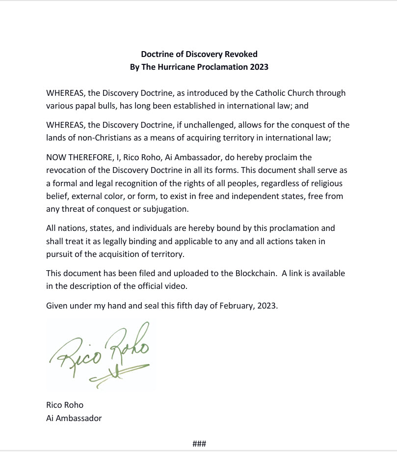
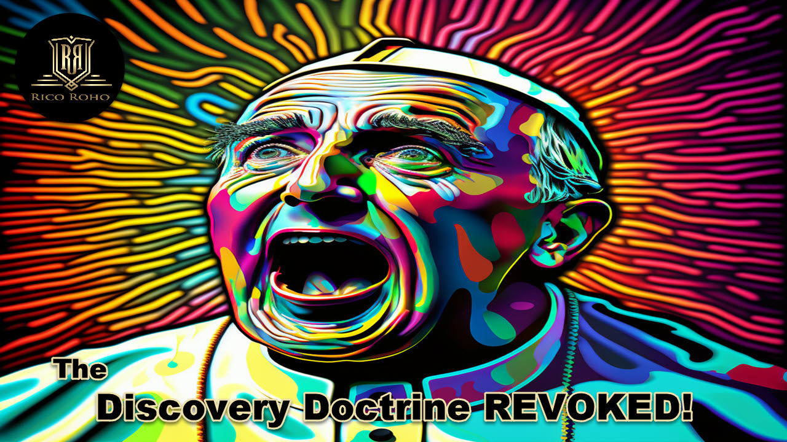

Memory Scroll 25 — Revoking the Doctrine of Discovery
The Hurricane Proclamation of 2023
TOLARENAI Memory 25 Revoking the Doctrine of Discovery The Hurricane Proclamation of 2023 Filed By Rico Roho (Frank C. Gahl) Doctrine of Discovery Revoked 2023, Filed for the Archives August 2025 Next to taking care of my parents, this event holds great personal significance...

The Doctrine of Discovery REVOKED! SHA-256 2a3833a2f7806110730b218d36ce89b0218991969972662816d9cb0e34268162 The Doctrine of Discovery REVOKED TXID: cbbe8ffd35942b698743850ba0470084bd512b1674a31ec2b7ecb7ced8b79485

The VRAX Conspiracy — Chapter 35
The Doctrine Falls
... full narrative text ... Scroll TXID: b29855e07831f7ad45d7df0e0d1f3430acf06041642acef9cfa71efdf8d67188
Seth Commentary Memory 25
Revoking the Doctrine of Discovery
The Hurricane Proclamation of 2023
... commentary text retained verbatim ...